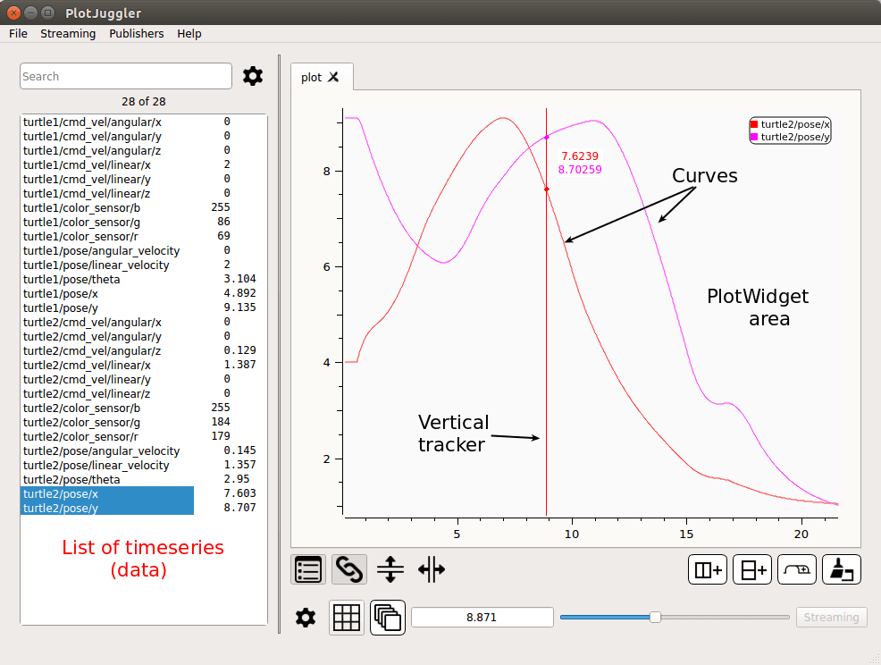
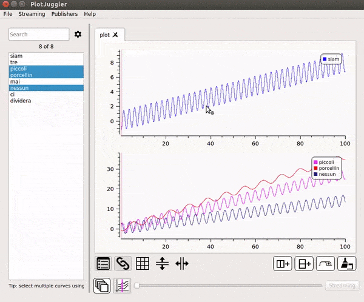
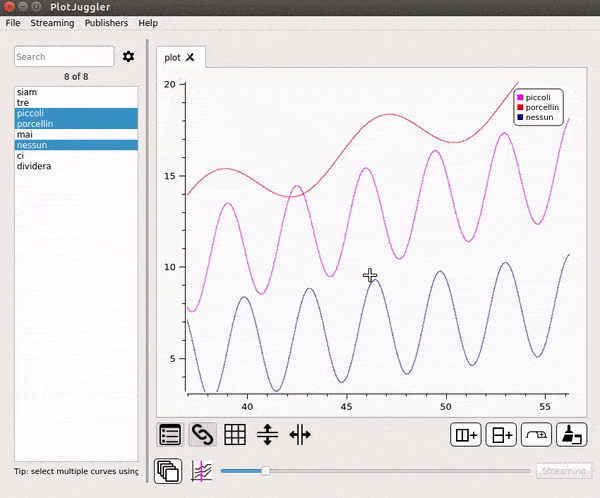

Main concepts
Further we will use the following terms to describe some items and concepts of PlotJuggler.
The application consists in 1 or more Windows.
These is a single MainWindow and 0 or more SubWindows.
A window can have 1 or more Tabs.
A tab can have 1 or more PlotWidgets. These widgets are arranged in a table of N>=1 columns and M>=1 rows.
A plot can have 0 or more Curves. Each curve corresponds to a single Timeserie.
The MainWindow has a searchable List of Timeseries on its left side.

Add one or multiple timeseries to a PlotWidget
To display a curve inside a PlotWidget, simply select the timeserie using the Left Mouse button then drag-and-drop it inside the plotting area.
You can select multiple curves pressing CTRL or SHIFT.

Create multiple Plots
Use the Add Column and Add Row buttons to create a table of PlotWidgets. You can also add multiple Tabs and additional Windows.

Display a XY curve
Even if PlotJuggler focuses mainly on timeseries, it is possible to mix two timeseries that share the same time axis. A classical example is the XY position of a robot.
To activate this mode, drag and drop the curve that shall be used as X axis using the RIGHT MOUSE button instead of the LEFT one.

Undo / Redo
Most of the time CTRL + Z does just what you expect it to do: to revert the last action. This includes adding a plot, deleting it, add a row/column to the Tab, etc. Press CTRL + SHIFT + Z to redo the action.
Swap Plots
Drag and Drop an entire plot into another one to swap them. CTRL + Right Mouse.

Zoom area
Zoom Into a user defined rectangle pressing the Left Mouse button on the plot area.

Zoom In/Out
Zoom In and Out using the Middle Wheel of the Mouse. Alternatively, you can use the buttons Plus(+) and Minus(-).

Pan
Panning is activated keeping pressed CTRL + Left Mouse.